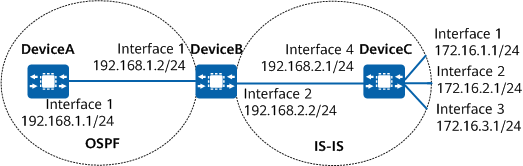

Example for Applying a Route-Policy to Route Import
Networking Requirements
In Figure 1, DeviceA and DeviceB exchange routes through OSPF; DeviceB and DeviceC exchange routes through IS-IS. It is required to configure the route importing function on DeviceB to import IS-IS routes to the OSPF routing table and use a route-policy to configure route attributes. You need to set the cost of the route to 172.16.1.0/24 to 100, and set the tag attribute of the route to 172.16.2.0/24 to 20.

In this example, interface 1, interface 2, interface 3, and interface 4 represent 10GE 0/0/1, 10GE 0/0/2, 10GE 0/0/3, and 10GE 0/0/4, respectively.

To complete the configuration, you need the following data:
Area IDs, IS-IS levels, and system IDs of DeviceB and DeviceC
Area 0 (backbone area), in which DeviceA and DeviceB are located
ACL number, name of the IP prefix list, cost of the route to 172.16.1.0/24, and tag of the route to 172.16.2.0/24
Configuration Roadmap
The configuration roadmap is as follows:
Configure basic IS-IS functions on DeviceB and DeviceC.
Configure OSPF on DeviceA and DeviceB and import IS-IS routes.
Configure a route-policy on DeviceB and apply the route-policy when OSPF imports IS-IS routes.
Procedure
- Assign an IPv4 address to each involved interface. For configuration details, see Configuration Scripts.
- Configure IS-IS.
# Configure DeviceC.
[DeviceC] isis [DeviceC-isis-1] is-level level-2 [DeviceC-isis-1] network-entity 10.0000.0000.0001.00 [DeviceC-isis-1] quit [DeviceC] interface 10ge 0/0/4 [DeviceC-10GE0/0/4] isis enable [DeviceC-10GE0/0/4] quit [DeviceC] interface 10ge 0/0/1 [DeviceC-10GE0/0/1] isis enable [DeviceC-10GE0/0/1] quit [DeviceC] interface 10ge 0/0/2 [DeviceC-10GE0/0/2] isis enable [DeviceC-10GE0/0/2] quit [DeviceC] interface 10ge 0/0/3 [DeviceC-10GE0/0/3] isis enable [DeviceC-10GE0/0/3] quit
# Configure DeviceB.
[DeviceB] isis [DeviceB-isis-1] is-level level-2 [DeviceB-isis-1] network-entity 10.0000.0000.0002.00 [DeviceB-isis-1] quit [DeviceB] interface 10ge 0/0/2 [DeviceB-10GE0/0/2] isis enable [DeviceB-10GE0/0/2] quit
- Configure OSPF and route importing.
# Configure DeviceA and enable OSPF.
[DeviceA] ospf [DeviceA-ospf-1] area 0 [DeviceA-ospf-1-area-0.0.0.0] network 192.168.1.0 0.0.0.255 [DeviceA-ospf-1-area-0.0.0.0] quit [DeviceA-ospf-1] quit
# Configure DeviceB, enable OSPF, and import IS-IS routes.
[DeviceB] ospf [DeviceB-ospf-1] area 0 [DeviceB-ospf-1-area-0.0.0.0] network 192.168.1.0 0.0.0.255 [DeviceB-ospf-1-area-0.0.0.0] quit [DeviceB-ospf-1] import-route isis 1 [DeviceB-ospf-1] quit
# Check the OSPF routing table on DeviceA to view the imported routes.
[DeviceA] display ospf routing OSPF Process 1 with Router ID 192.168.1.1 Routing Tables Routing for Network Destination Cost Type NextHop AdvRouter Area 192.168.1.0/24 1 Stub 192.168.1.1 192.168.1.1 0.0.0.0 Routing for ASEs Destination Cost Type Tag NextHop AdvRouter 172.16.1.0/24 1 Type2 1 192.168.1.2 192.168.1.2 172.16.2.0/24 1 Type2 1 192.168.1.2 192.168.1.2 172.16.3.0/24 1 Type2 1 192.168.1.2 192.168.1.2 192.168.2.0/24 1 Type2 1 192.168.1.2 192.168.1.2 Routing for NSSAs Destination Cost Type Tag NextHop AdvRouter Total Nets: 5 Intra Area: 1 Inter Area: 0 ASE: 4 NSSA: 0 - Configure filters.
# Configure ACL 2002 on DeviceB to allow packets from 172.16.2.0/24 to pass.
[DeviceB] acl number 2002 [DeviceB-acl4-basic-2002] rule permit source 172.16.2.0 0.0.0.255 [DeviceB-acl4-basic-2002] quit
# Configure an IP prefix list named prefix-a on DeviceB to allow the packets from 172.16.1.0/24 to pass.
[DeviceB] ip ip-prefix prefix-a index 10 permit 172.16.1.0 24
- Configure a route-policy.
# Configure a route-policy named isis2ospf on DeviceB.
[DeviceB] route-policy isis2ospf permit node 10 [DeviceB-route-policy] if-match ip-prefix prefix-a [DeviceB-route-policy] apply cost 100 [DeviceB-route-policy] quit [DeviceB] route-policy isis2ospf permit node 20 [DeviceB-route-policy] if-match acl 2002 [DeviceB-route-policy] apply tag 20 [DeviceB-route-policy] quit [DeviceB] route-policy isis2ospf permit node 30 [DeviceB-route-policy] quit
- Apply the route-policy for importing routes.
# Configure DeviceB and apply the route-policy for importing routes.
[DeviceB] ospf [DeviceB-ospf-1] import-route isis 1 route-policy isis2ospf [DeviceB-ospf-1] quit
Verifying the Configuration
# Check the OSPF routing table on DeviceA.
[DeviceA] display ospf routing
OSPF Process 1 with Router ID 192.168.1.1
Routing Tables
Routing for Network
Destination Cost Type NextHop AdvRouter Area
192.168.1.0/24 1 Stub 192.168.1.1 192.168.1.1 0.0.0.0
Routing for ASEs
Destination Cost Type Tag NextHop AdvRouter
172.16.1.0/24 100 Type2 1 192.168.1.2 192.168.1.2
172.16.2.0/24 1 Type2 20 192.168.1.2 192.168.1.2
172.16.3.0/24 1 Type2 1 192.168.1.2 192.168.1.2
192.168.2.0/24 1 Type2 1 192.168.1.2 192.168.1.2
Routing for NSSAs
Destination Cost Type Tag NextHop AdvRouter
Total Nets: 5
Intra Area: 1 Inter Area: 0 ASE: 4 NSSA: 0
The preceding command output shows that the cost of the route to 172.16.1.0/24 is 100, the tag of the route to 172.16.2.0/24 is 20, and the attributes of other routes remain unchanged.
Configuration Scripts
DeviceA
# sysname DeviceA # interface 10GE0/0/1 ip address 192.168.1.1 255.255.255.0 # ospf 1 area 0.0.0.0 network 192.168.1.0 0.0.0.255 # return
DeviceB
# sysname DeviceB # acl number 2002 rule 5 permit source 172.16.2.0 0.0.0.255 # isis 1 is-level level-2 network-entity 10.0000.0000.0002.00 # interface 10GE0/0/1 ip address 192.168.1.2 255.255.255.0 # interface 10GE0/0/2 ip address 192.168.2.2 255.255.255.0 isis enable 1 # ospf 1 import-route isis 1 route-policy isis2ospf area 0.0.0.0 network 192.168.1.0 0.0.0.255 # route-policy isis2ospf permit node 10 if-match ip-prefix prefix-a apply cost 100 # route-policy isis2ospf permit node 20 if-match acl 2002 apply tag 20 # route-policy isis2ospf permit node 30 # ip ip-prefix prefix-a index 10 permit 172.16.1.0 24 # return
DeviceC
# sysname DeviceC # isis 1 is-level level-2 network-entity 10.0000.0000.0001.00 # interface 10GE0/0/1 ip address 172.16.1.1 255.255.255.0 isis enable 1 # interface 10GE0/0/2 ip address 172.16.2.1 255.255.255.0 isis enable 1 # interface 10GE0/0/3 ip address 172.16.3.1 255.255.255.0 isis enable 1 # interface 10GE0/0/4 ip address 192.168.2.1 255.255.255.0 isis enable 1 # return